RTTY for macOS
RYRY (formerly mmtty4mac) is a native Mac port of MMTTY (JE3HHT). It uses the same proven demodulator and adds a log, contest support, radio control over USB and an API for loggers.
- MMTTY demodulator
- AFSK and FSK
- CAT Icom / Yaesu / Kenwood / Elecraft + hamlib
- ADIF log, Cabrillo
- 9 contest presets, WAE QTC
- fldigi-compatible API
- English / Czech

1. Installation
- Install RYRY from the Mac App Store (free). Updates come through the App Store.
- On first launch RYRY asks for the folder for the log (the panel opens on your Documents folder) – click Allow Access and RYRY creates its
RYRYfolder there. macOS lets the app into a folder only after you choose it; RYRY remembers the access. If you cancel, the log is kept inside the app's container and the status bar says where. - macOS asks for microphone access – allow it, otherwise receiving does not work. You can change it in System Settings → Privacy & Security → Microphone.
- No radio at hand? Help → Play Demo Signal plays a short contest QSO so you can watch RYRY decode.
- Open this manual any time from the app: Help → RYRY Manual (⌘?).
Coming from mmtty4mac? Your settings move over on the first launch; RYRY asks once for your log folder (usually ~/Documents/mmtty4mac), and online passwords may need to be entered again.
Optional: for radios the built-in CAT does not know, install hamlib with brew install hamlib and start rigctld yourself (see Radio control).
2. First setup
Open Settings with ⌘,. Changes take effect with Apply (restarts audio, rig and API); modem parameters and the language apply immediately.
Station
Your call is sent in macros (%m) and determines your CQ zone and continent (for contests and QTC).

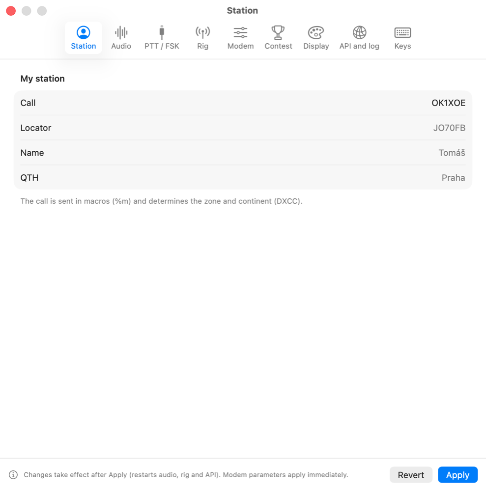
Audio
Choose the radio's sound card (typically “USB Audio CODEC”) as input and output. Set the TX level so the radio's ALC barely moves. Clock calibration measures the sound card's real sample rate – it improves decoding with cheap sound cards.

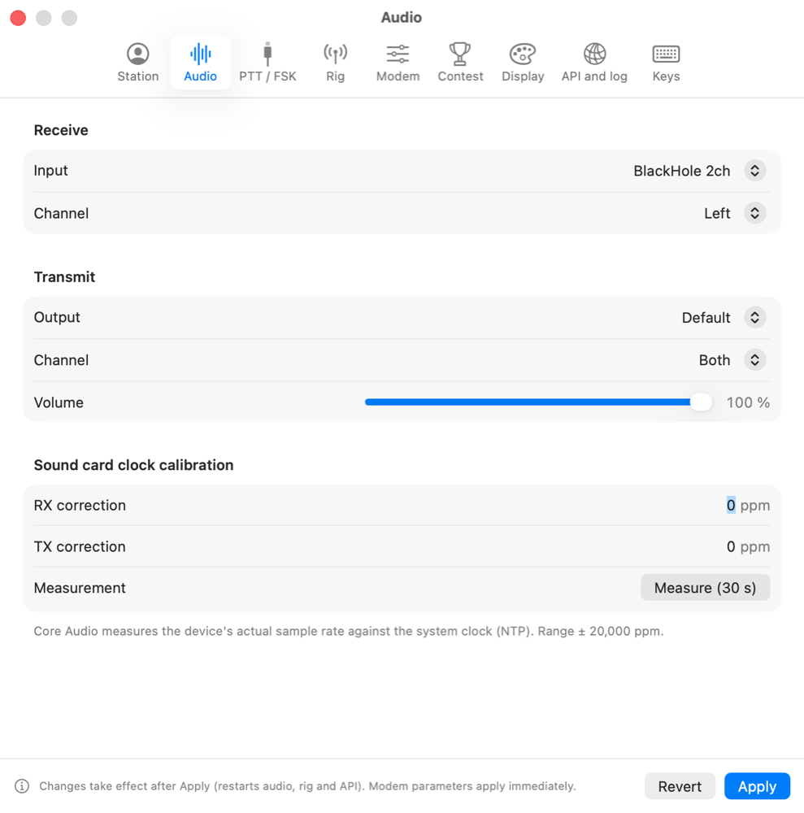
PTT / FSK
How the transmitter is keyed: CAT (a command to the radio), RTS/DTR of a serial port, or VOX. AFSK = RTTY via audio (radio in SSB/DATA), FSK = keying via a serial line (radio in RTTY/FSK mode). Timing (TX delay, PTT tail) and a safety timer that stops a stuck transmission.

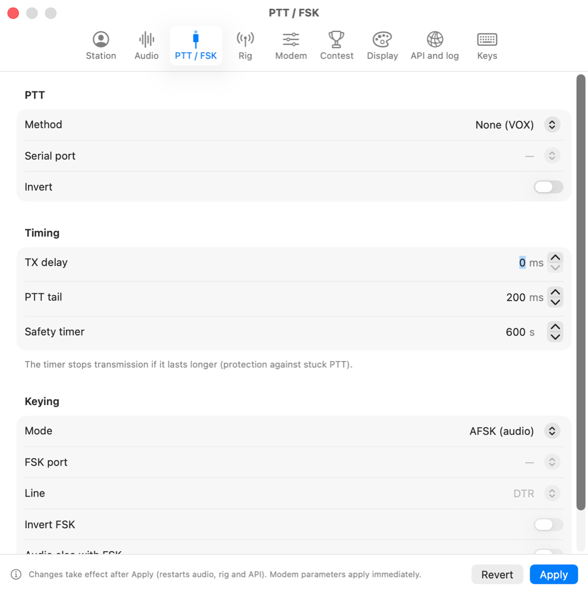
Modem
Demodulator, filter, AFC and transmit parameters. The defaults match MMTTY; they apply immediately without Apply.

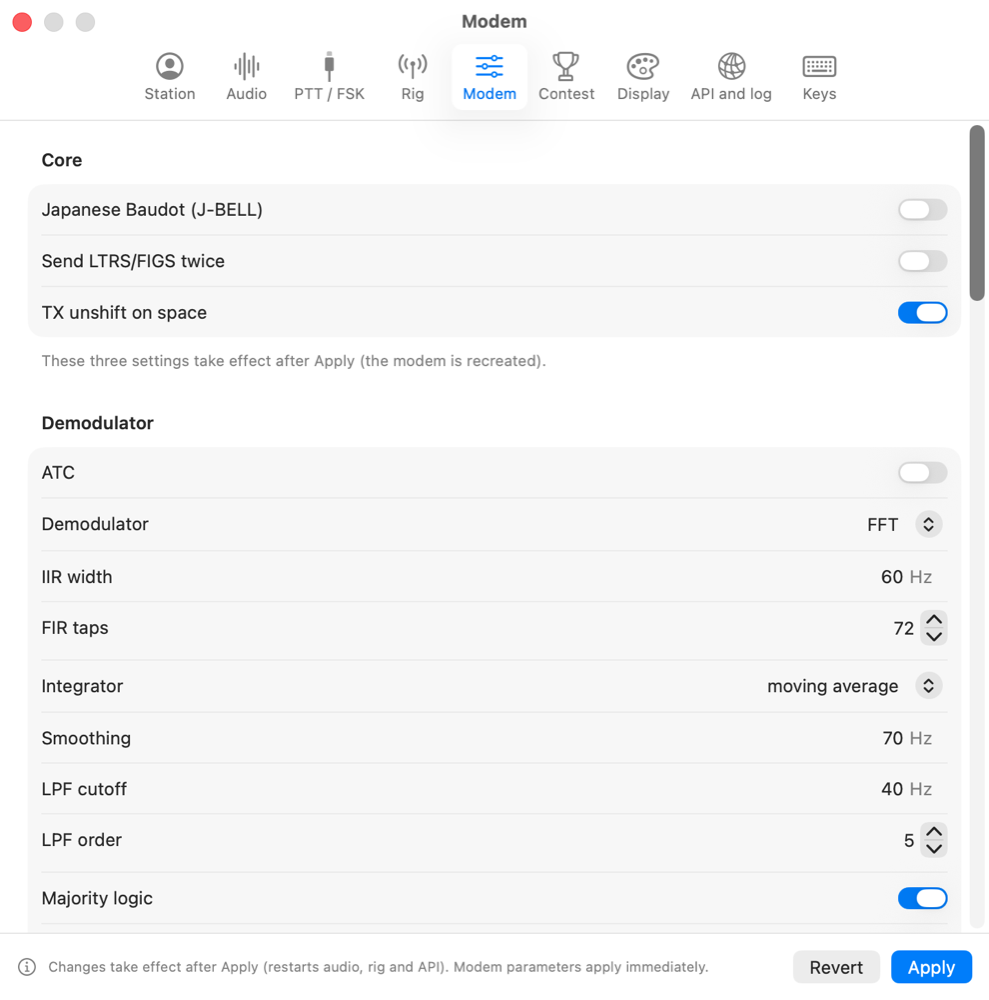
3. Radio control (CAT)
On the Rig tab choose how to control the radio:
- CAT via USB (built-in) – no other programs. Protocols Icom CI-V (IC-7300, 7610, 705, 9700…; picking the model sets the CI-V address), Yaesu (FT-991, FTDX10/101, FT-710), Kenwood (TS-590, TS-890) and Elecraft (K3, K4, KX3). The app reads and sets the frequency and mode and controls PTT.
- hamlib rigctld (network) and flrig – for other radios: connect to a running program. Start rigctld yourself, e.g.
rigctld -m <model> -r /dev/cu.X -s <speed>(rigctld -llists the models). The App Store version cannot start rigctld for you.

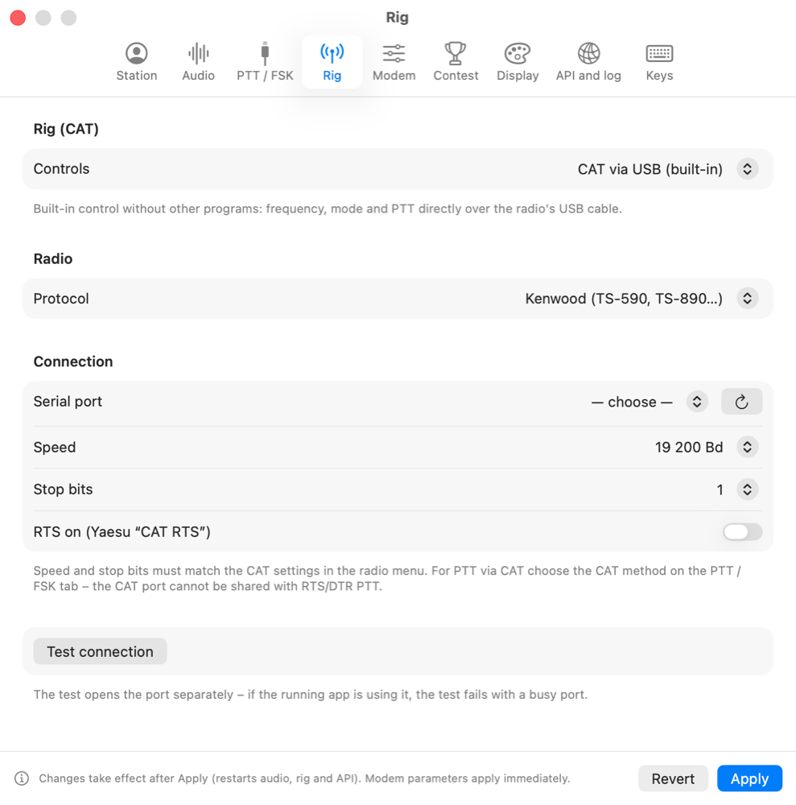
4. Receiving
- Tuning: click the spectrum or waterfall to tune mark; space is one shift higher. HAM sets a 170 Hz shift.
- The mouse wheel over the waterfall changes the squelch level, right-click places a notch against interference.
- AFC tracks the signal (right-click: only with open squelch, range limit), NET transmits on the RX frequency, REV swaps mark and space, ATC and SQ work as in MMTTY.
- Filters (menu next to Shift): BPF, AA6YQ, notch/LMS, UOS. XY shows the cross tuning indicator.
- Call highlighting: in the RX text your call is red, stations already in the log blue, new ones bold and dupes struck through. When someone calls you, a sound plays (optionally a notification).
- Watching: in Settings → Spots you can watch chosen calls and new countries (on the band or at all) in spots and in the RX text.
- Click a word in the received text to put it into the QSO window – call, RST, number or name by word type.
Second decoder and multi-channel decoding
- The second decoder (the “2nd dec.” switch in the top bar) receives the same signal with another demodulator and shows its text in a panel below the RX window. A weak or disturbed signal is often copied by one of them – much like 2Tone is used next to MMTTY in contests.
- Multi-channel decoding (Window → Channels) finds RTTY signals in the waterfall by itself and decodes each separately (up to 8 channels). Tune retunes the main decoder to the chosen signal. Settings: Settings → Decoders.

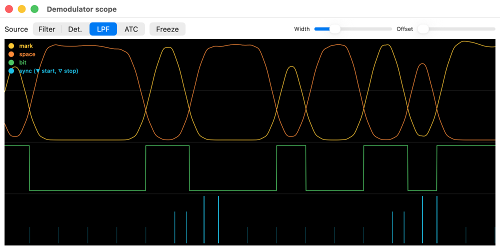
5. Transmitting and macros
- TX / RX: the TX button or ⌘T. Esc = immediate RX. Tune = a carrier for tuning.
- Transmit pane: sends by characters, words or lines; Send all sends the whole text.
- Macros F1–F12 and ⇧F1–⇧F4 (16 buttons): click or press the key; right-click → Edit… (name, text, color, repeat) – the editor lists the variables. A button's tooltip shows what the macro sends right now (with the call and exchange from the QSO window) and its template below.
- Macro sets: a Normal / DX switch above the macro bar; in a contest every contest (a custom one too) has its own set that is switched with the selected contest. Edits are saved into the active set. Default macros… replaces the set with the defaults – for a contest built from its exchange.
- Messages: longer saved texts (station description, farewell) in the Messages menu.
- Send text file is in the Transmit menu.
The default contest set (example URC DX RTTY, other station DL1ABC, exchange BHE; the layout matches ESM). Contests without an RST (NA Sprint, NAQP, WRT, Rookie Roundup, BARTG Sprint) have macros without 599, NA Sprint keeps the order from its rules.
| Button | Macro | Sends |
|---|---|---|
| F1 CQ | CQ TEST CQ TEST DE %m %m TEST | CQ TEST CQ TEST DE OK1XOE OK1XOE TEST |
| F2 Answer | %c DE %m %m | DL1ABC DE OK1XOE OK1XOE |
| F3 TU Exch (S&P) | %c TU 599 %N %N %m | DL1ABC TU 599 BHE BHE OK1XOE |
| F4 Exch (Run) | %c 599 %N %N %c | DL1ABC 599 BHE BHE DL1ABC |
| F5 TU + log | %c TU %m TEST %l | DL1ABC TU OK1XOE TEST |
| F6 Exch ×1 | %c 599 %N | DL1ABC 599 BHE |
| ⇧F3 My call | %m %m | OK1XOE OK1XOE |
Macro variables:
| Stations | Report and exchange | ||
|---|---|---|---|
%c | other station's call | %r / %s | sent / received RST (with the exchange) |
%n | other station's name (otherwise OM) | %R | sent RST (3 characters only) |
%q | other station's QTH | %N | the contest exchange sent after the RST – 001, BHE, 015 TOMAS DX |
%m | my call | %M | received exchange |
%a | my name (without diacritics) | %S | my serial number |
%o | my locator | %X | exchange text without the serial (zone, territory, name + QTH) |
%Z | my CQ zone | %x %y | serial and time (BARTG) |
| Time and greeting | Control | ||
|---|---|---|---|
%g | GOOD MORNING/AFTERNOON/EVENING by the other station's local time | %l | log the QSO |
%f | the same, short GM/GA/GE | %{…} | CW identification |
%D | UTC date | %L %F | LTRS / FIGS |
%T %t | UTC time (12:34 / 1234) | %E | end of the macro |
\ | at the end = receive after sending; at the start = transmit and put the text into the window | ||
# | at the end = stay in transmit; at the start = only into the transmit window | ||
Example of the “Answer” macro: %c %c DE %m %m %m K\
6. QSO and log
The QSO window shows only the fields the current mode needs. Under the call you see the DXCC country (from cty.dat), CQ and ITU zones, the other station's local time and previous QSOs. Log (⌘L) saves the QSO, Clear empties the window.
Band without a rig, call suggestions, callbook
- Band: without a connected rig choose the band below the QSO fields or enter the frequency in kHz – it is written to the log and kept for the next QSOs. With a rig the frequency comes from the radio.
- Super Check Partial: while typing a call, known calls (from MASTER.SCP and your log) are suggested below the Call field; “≈” marks calls differing by one character – they help correct a miscopied call. Download MASTER.SCP in Settings → Contest.
- Beam heading: below the country you see the azimuth and distance to the other station (from the locator, otherwise by country) and the long path.
- Frequency: click the frequency in the top bar (or ⌥⌘F) to enter a frequency or pick a band – the rig retunes (not while transmitting).
- Callbook: after entering a call the name, QTH and locator are filled from QRZ.com or HamQTH (Settings → API and log → Callbook; the password is kept in the Keychain).

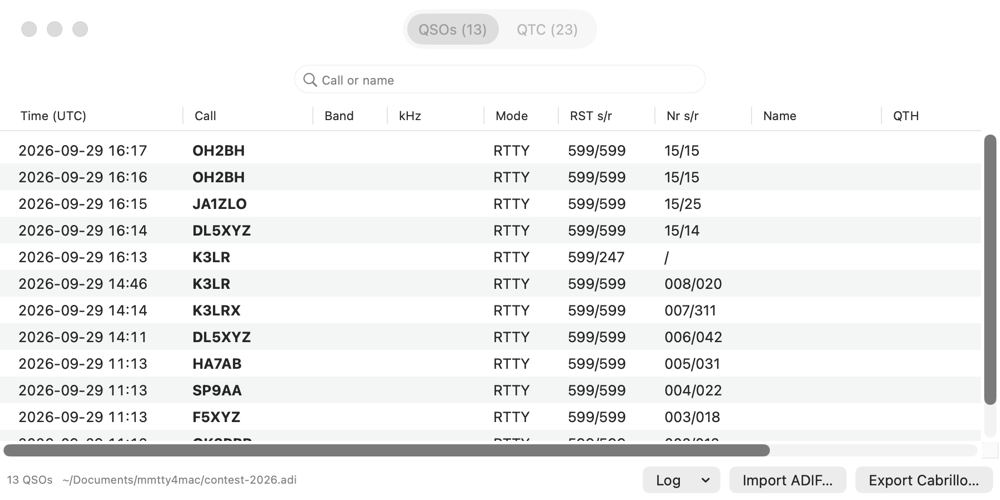
Backups: the log is backed up once a day into the backup folder next to the log (last 10 backups); manually File → Back Up Log Now. Import from MMTTY: File → Import from MMTTY… reads macros, messages, call, modem parameters and keyboard shortcuts from a Windows Mmtty.ini; it shows a preview of what will be overwritten first.
The log is stored in the folder from Settings → API and log (by default ~/Documents/RYRY; a log from mmtty4mac stays in ~/Documents/mmtty4mac) as JSONL and also as ADIF (mmtty4mac.adi) that any logger can read. When you open or create a log in another folder, RYRY asks once for access to it. For an old MMTTY log, export it to ADIF in MMTTY and import it in RYRY – duplicates are skipped.
Log management
Each log is a separate file – for example one for everyday operating and one per contest. In the File menu:
| Command | What it does |
|---|---|
| New Log… ⌘N | creates an empty log with the chosen name and location; contest serial numbers start at 1 |
| Open Log… ⌘O | opens a RYRY log or an ADIF file from another program (it is converted, the original stays as .adi.orig) |
| Open Recent Log | the last 8 logs |
| Save Log As… ⇧⌘S | saves a copy under a new name and continues in it |
| Export ADIF… | a copy of the ADIF elsewhere; the log stays open |
| Import ADIF… | adds QSOs from ADIF to the open log (duplicates are skipped) |
Every QSO is saved the moment it is logged, so there is no separate “Save”. The name of the open log is in the Log window title.
7. Contests and QTC
On the Contest tab turn on contest mode and pick a preset – 28 RTTY contests from contestcalendar.com: SARTG New Year, ARRL RTTY Roundup, PRO Digi, BARTG RTTY Sprint, Mexico RTTY, CQ WPX RTTY, NAQP RTTY, North American Sprint RTTY, YB DX RTTY, BARTG HF RTTY, EA RTTY, IG-RY WW RTTY, BARTG Sprint 75, SP DX RTTY, VOLTA WW RTTY, SARTG WW RTTY, ARRL Rookie Roundup RTTY, Russian WW RTTY, CQ WW RTTY, URC DX RTTY, Russian WW Digital, Makrothen RTTY, DARC RTTY Sprint, JARL WW RTTY (formerly JARTS), WAE DX Contest RTTY, TRC DIGI, OK DX RTTY Contest and the weekly Weekly RTTY Test (WRT). The preset sets the Cabrillo name, the exchange format, the nearest start that has not ended yet (a running contest too) and the sent exchange from your Station (e.g. the URC territory from the prefix: OK1 = BHE, OK2 = MOR). Below the preset is the Contest rules section: date, bands, what is exchanged, points, multipliers, dupes, a link to the official rules, and in orange the ambiguous parts of the rules. Always check the date in the rules.

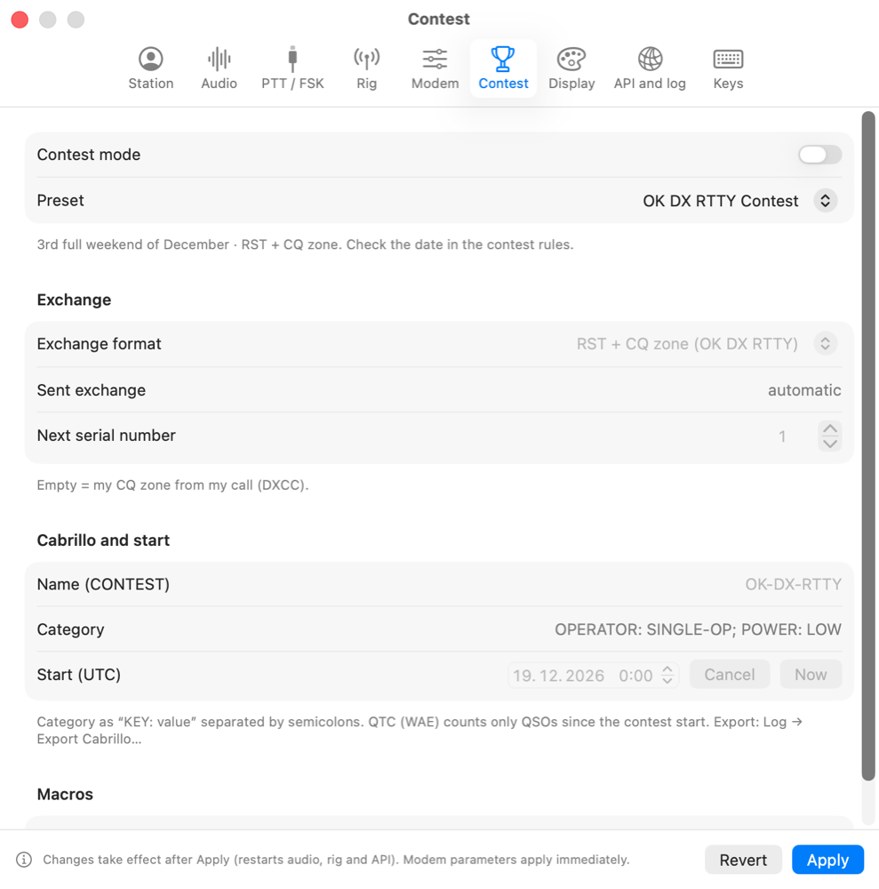

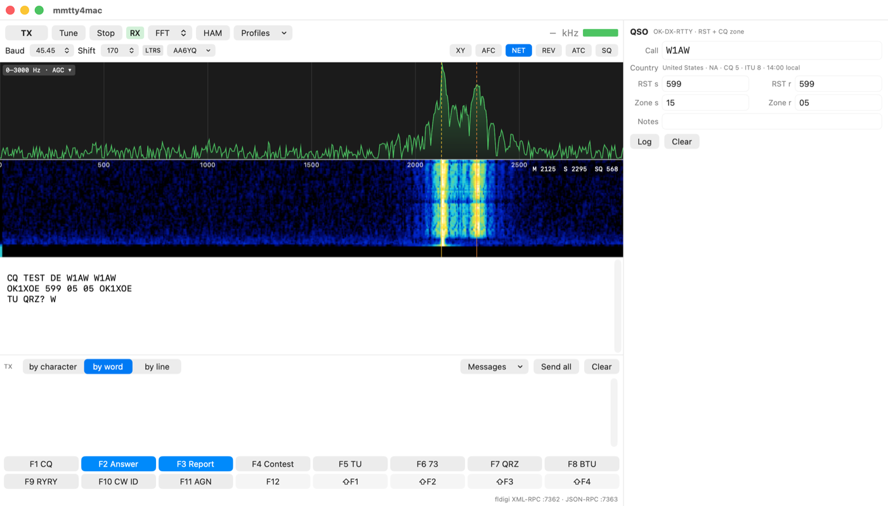
Dupes: when you already have a QSO with the station in this contest on the same band (Russian WW Digital, PRO Digi and a custom contest: band and mode), a red DUPE appears next to the call. You can still log it.
Exchange formats: RST + serial number (or a fixed exchange), RST + serial + text (name, QTH, CQ zone, member mark), RST + text without a serial (territory, name + QTH, licence year), RST + CQ zone, CQ/RJ (zone + QTH), BARTG (number + time), WAE (number + QTC), PED. Where some stations send a code instead of the number (ARRL RU – state, Russian contests – oblast, DARC – DOK, Mexico – state, EA – province, SP DX – powiat), the QSO window has both a number and a code field and one is enough. Serial numbers increase automatically after logging. The Multipliers and Score windows follow the rules of the selected contest.
ESM – Enter Sends Message (Run / S&P)
When enabled in Settings → Contest → ESM, Enter in the Call or exchange field sends a macro depending on the QSO state, much like N1MM: Run (calling CQ) – CQ → exchange → TU and log; S&P (answering) – my call → exchange and log. Switch the mode in the QSO panel header or with ⌃R; the panel shows what Enter will send. Enter sends nothing while transmitting and an empty macro is never sent.
Rate: in a contest the status bar shows the QSO count and the rate over the last 10 and 60 minutes (QSOs per hour); the Log window shows counts per band.
Score
Window → Score shows, for the selected preset, QSOs, dupes, points and multipliers per band and in total, plus the resulting score with its formula (e.g. “Points 120 × multipliers 35 = 4,200”). It updates with every logged, edited or deleted QSO; the score is also shown in the status bar. It is an estimate – log checking removes busted and unconfirmed QSOs. Rules that could not be verified are marked in the window.

Multipliers and band map
Window → Multipliers shows, for the selected preset, the worked multipliers per band (DXCC countries, CQ zones, WPX prefixes, states and provinces, call areas…) and the missing ones for finite sets. For the entered call a green NEW MULT appears in the QSO window. Rules that could not be verified in the official contest rules are marked in the window. Window → Band Map shows the RTTY segment of the band with spots by frequency and the rig position; clicking a spot tunes the rig and puts the call in. The band is chosen automatically from the rig, the QSO window frequency or wherever most spots are; you can also pick it from the menu. The scale covers the whole band (the map opens on the digimode part, where RTTY usually lives). The mouse wheel pans it and Shift + wheel zooms; the magnifier buttons and dragging do the same, and the ⤢ button shows the whole band.
Call history: a file in N1MM Call History format (Settings → Contest) prefills the other station's name, locator and exchange (e.g. zone).
WAE and QTC
In the WAE format the QSO window has a QTC panel: QTC? asks the other station, QRV – receive opens receiving a series, Send… prepares and sends a series from your log. The app enforces the rules – max. 10 QTC per pair of stations, only between continents, each QSO only once. Received lines are filled by clicking words or with Load from RX.
8. Files and WAV
| File menu | What it does |
|---|---|
| Save RX text to file… | saves the contents of the RX window |
| Log RX text to file continuously | daily files rx-YYYY-MM-DD.txt in the rx folder under the log folder, optionally with UTC time |
| Play WAV into receiver | real time, 4× or as fast as possible; pause, seek and rewind in the top bar |
| Record RX to WAV… | a red “REC” shows the recording; click it to stop |
| Import ADIF… | QSOs from another program (duplicates are skipped) |
| System sound settings…, Audio MIDI Setup… | sound card level and format |
9. API for loggers
To loggers RYRY looks like fldigi (XML-RPC on port 7362), so for example RUMlogNG or MacLoggerDX can control it – choose “fldigi” in the logger. The second API is JSON-RPC over WebSocket (ws://127.0.0.1:7363/v1) with events for received text, state and logged QSOs; a Java client is in clients/java.

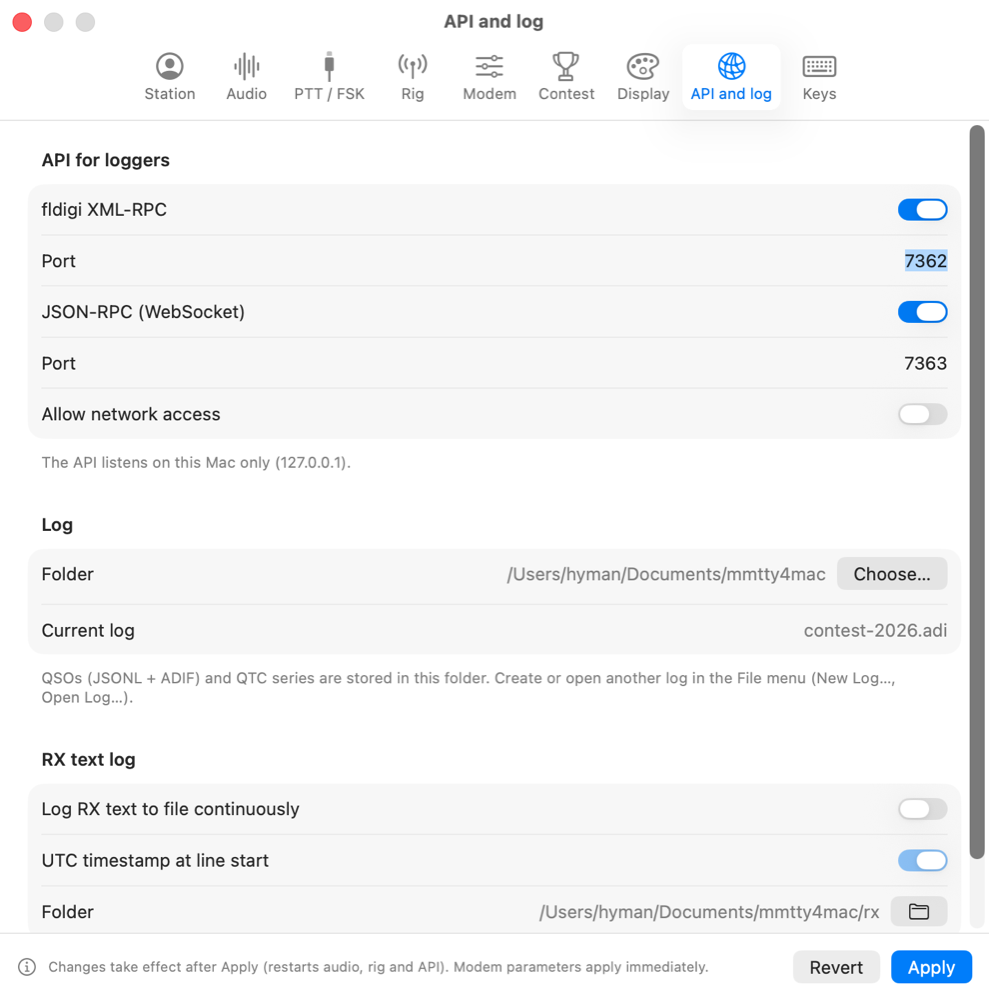
10. Online services
All services are off by default and connect to the internet only when enabled. Passwords and keys are stored in the macOS Keychain.
| Service | Where to enable | What it does |
|---|---|---|
| Callbook (QRZ.com, HamQTH) | Settings → API and log | fills in the other station's name, QTH and locator |
| DX cluster and RBN | Settings → Spots, Window → Spots | list of RTTY spots; double-click tunes the rig and puts the call into the QSO window (frequency offset for LSB/AFSK is configurable); spots within the passband appear as labels right in the waterfall (green = new, orange = in the log, red = dupe), a click tunes the mark |
| DX cluster commands | Window → Spots (bottom) | 10 command buttons (e.g. sh/dx 30, sh/wwv, set/skimmer) and a line for manual commands with history (↑↓ arrows); cluster replies go to the collapsible console. Right-click a button to edit the command in the same editor as TX macros; %k = rig frequency in kHz, %c = other station (e.g. dx %k %c RTTY) |
| LoTW, eQSL, Club Log | Settings → Online, Log window → Upload | uploads QSOs not uploaded yet – eQSL and Club Log directly (optionally automatically after logging); for LoTW RYRY saves an ADIF in Downloads and opens it in TrustedQSL, where you sign and send it, then you confirm in RYRY |
11. Display, language, keys

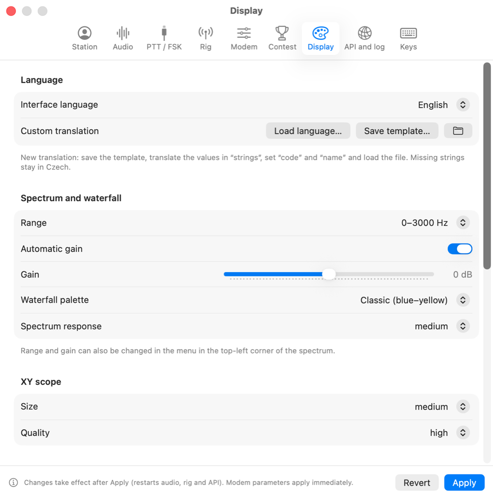

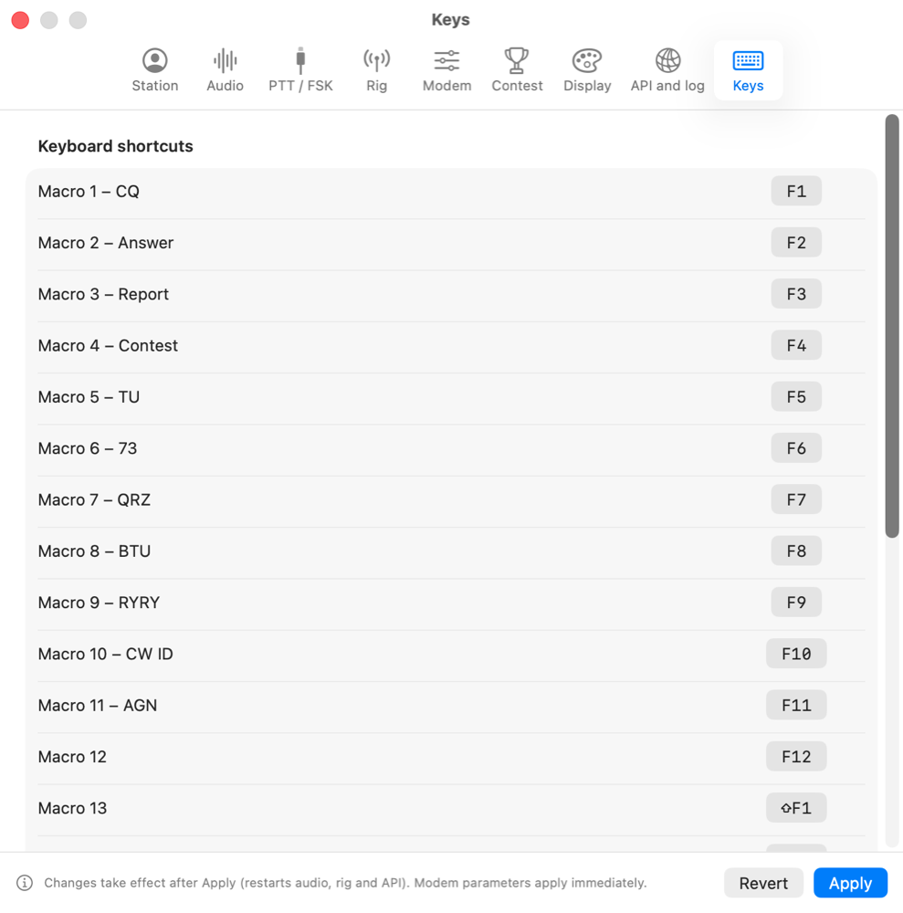
By default the interface is in English; choose Czech in Settings → Display → Interface language (the choice is remembered).
The language files cs.json and en.json are in ~/Library/Containers/cz.ok1xoe.ryry/Data/Library/Application Support/RYRY/Languages – the app runs in the macOS sandbox (the folder button in the Language section). You can edit them – a saved change applies immediately in all windows. An edited file is not overwritten by app updates, and texts missing in it are taken from the bundled version.
Your own translation: in the Language section choose Save template…, translate the values in strings, set code and name and load the file with Load language…. The language switches immediately in all windows.
12. Troubleshooting
| Problem | Solution |
|---|---|
| The waterfall is empty | Check the input in Settings → Audio and the microphone permission. |
| No decoding | Mark on the yellow line, shift 170 Hz, 45.45 Bd; try REV. |
| The radio does not transmit | PTT method on the PTT / FSK tab; for CAT try “Test connection” on the Rig tab. |
| Rig offline | Port and speed must match the radio menu and no other program may have the port open. |
| Distorted transmission | Lower the TX level (Settings → Audio) and watch the radio's ALC. |
| The logger does not connect | Settings → API and log: fldigi XML-RPC on, port 7362. |